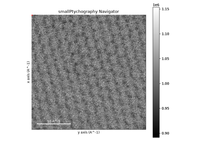
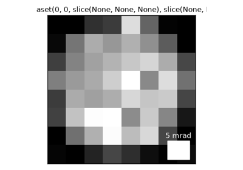

Examples# Below are a gallery of examples for using the EM-Database API to download EM Data into different applications.  Loading Data with HyperSpy Loading Data with HyperSpy  Loading Data into the quantem Package Loading Data into the quantem Package Finding a Dataset Finding a Dataset Configuration and the Download Location Configuration and the Download Location Gallery generated by Sphinx-Gallery